Disabling and Reenabling Panther Remote Dashboard (PDDS)
This procedure provides instructions on how to Disable and Re- enable the Panther Remote Dashboard. This applies to ALL instruments running System Software v6.2.
There are two Databases on Panther Systems:
- the Panther Database and
- the Panther Dashboard Database
This procedure provides instructions on how to Disable and Re- Enable the Panther Remote Dashboard.
We have learned that on System SW v6.2 the Panther’s Remote Dashboard purging mechanism does not work correctly. This can lead to large Remote Dashboard Database sizes as well as performance issues.
The interim fix is to disable the Panther Dashboard Data Storage service. After testing is complete, we will release an update with a software patch to address this issue.
If Syscheck, Flashcheck or a PQ Performance Qualification is required to be run, the Dashboard Service will have to be enabled prior to starting System Software.
Performance Qualification is required to be run, the Dashboard Service will have to be enabled prior to starting System Software.
After Syscheck, Flashcheck or a PQ is complete the Dashboard Service will have to be disabled again.
Time Required
- 5 Minutes
Procedure
PART A: Disabling Panther Dashboard Data Storage
- Ensure Panther Main is not running.
- Login to the FSE Shield.
- Open the Command Prompt.
 Type services.msc and press Enter.
Type services.msc and press Enter.
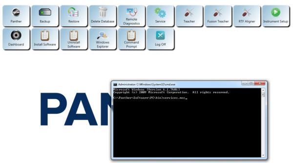
- Find “Panther Dashboard Data Storage”, right-click and select Stop.
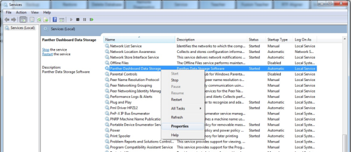
- The following screen will appear.
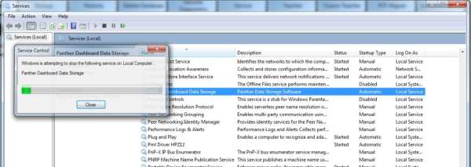
- Right-click “Panther Dashboard Data Storage”, Select Properties.
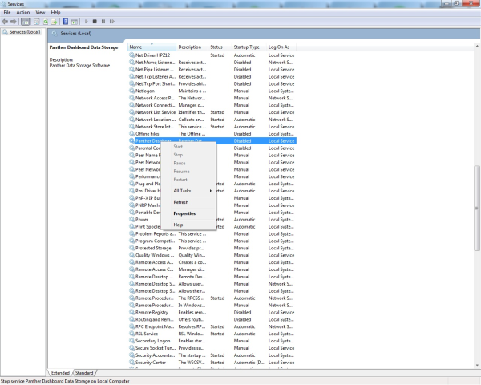
- Set the Startup Type to Disabled.
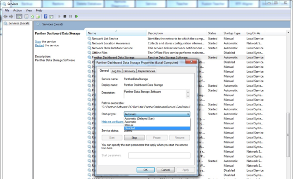
- Click Apply.
- Panther Dashboard Data Storage will now display as Disabled.
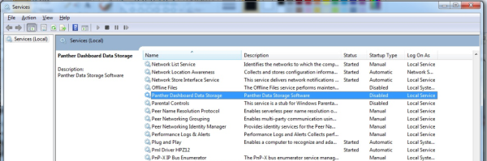
- Shutdown and Restart the PC and Instrument.
VERIFY Panther Dashboard Data Storage is Disabled
- Login to the FSE Shield.
- Open the Command Prompt.
- Type “services.msc” and press Enter.
- Find “Panther Dashboard Data Storage” and confirm:
- The Status field is blank and
- The Startup Type field is listed as Disabled.
- Exit the Services window.
- Start up Panther Main and release instrument to Customer.

PART B: Re-enabling Panther Dashboard Data Storage
- Ensure Panther Main is not running.
- Login to the FSE Shield.
- Open the Command Prompt.
- Type “services.msc” and press Enter.
- Find “Panther Dashboard Data Storage”, right-click and select Properties.
- Set the Startup Type to Manual.
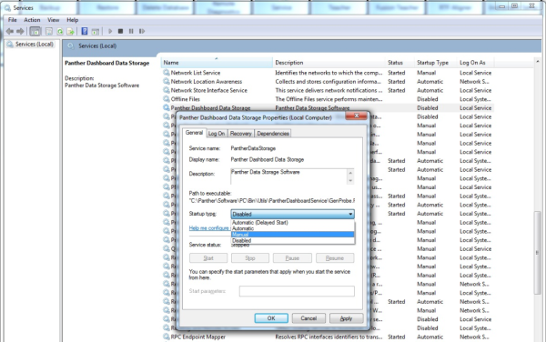
- Click Apply.
- From the Properties window, click Start to allow the service to initialize.
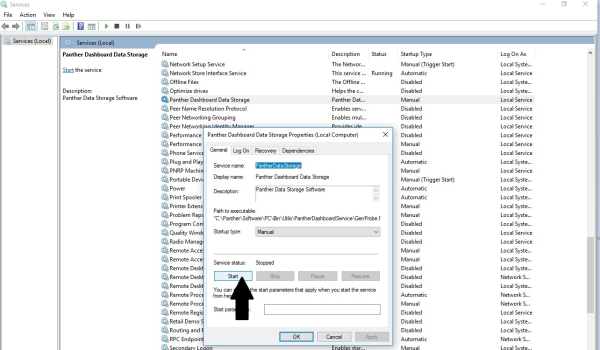
- The following screen will display.
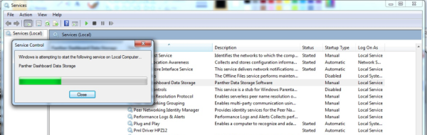
- Panther Dashboard Data Storage will now display as Manual and its Status will be marked as Started.
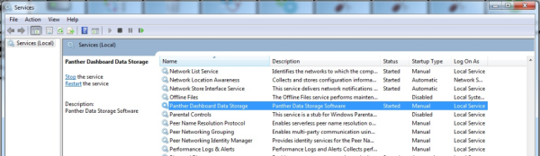
- Start Panther Main.
- Complete Syscheck, Flashcheck or a PQ as required
- Complete Dashboard Analysis,
- Generate required reports,
- Disable the Dashboard Service as per PART A.
Verification
- See procedure.
IMPORTANT NOTES
 Once Dashboard is disabled The Panther GUI will report:
Once Dashboard is disabled The Panther GUI will report:
“Panther Dashboard Data Storage service is not started.”
Please notify your customers that they will get this message on Startup post Shutdown.
Inform your customers that this message can be ignored.
There is no need to call this into Tech Support since the dashboard was knowingly disabled.
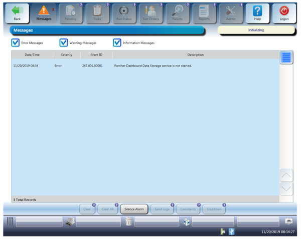
 button at the top of the page to send feedback, comments, or change requests.
button at the top of the page to send feedback, comments, or change requests.